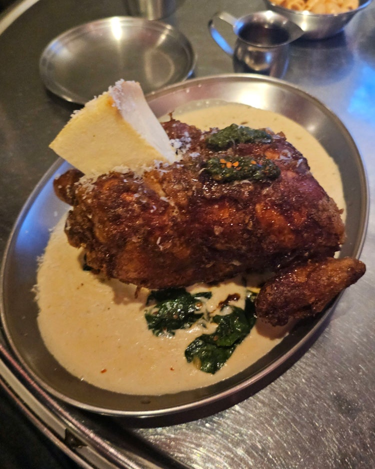
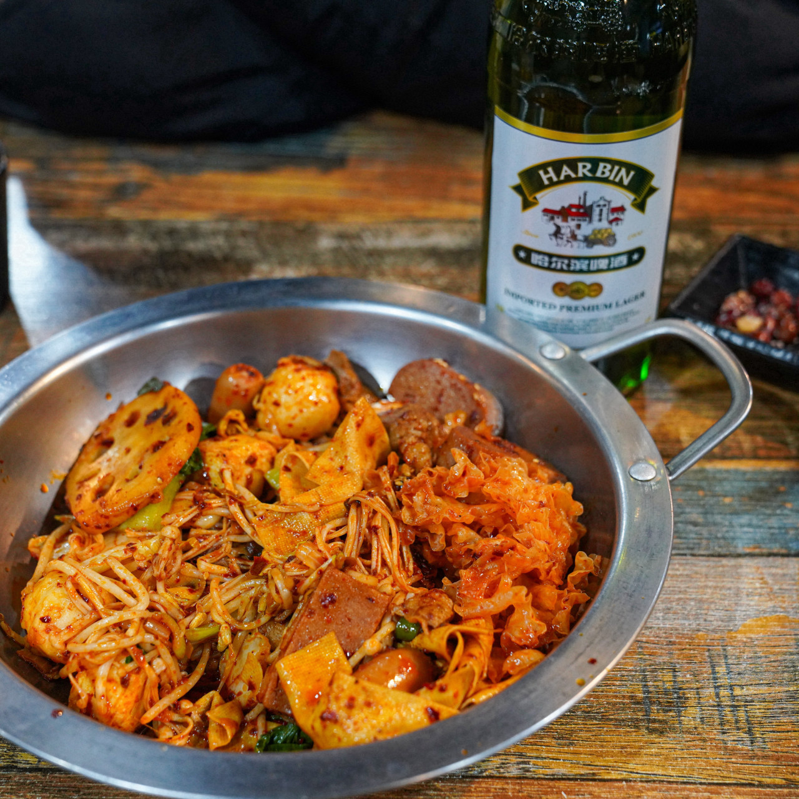
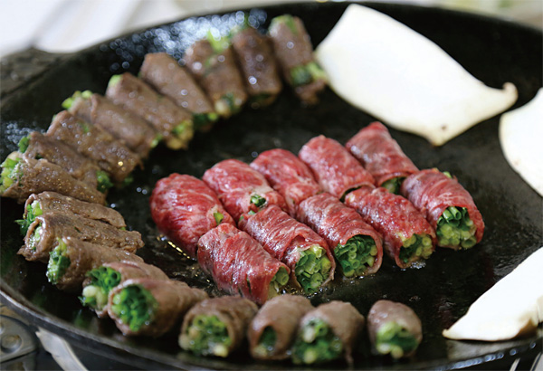
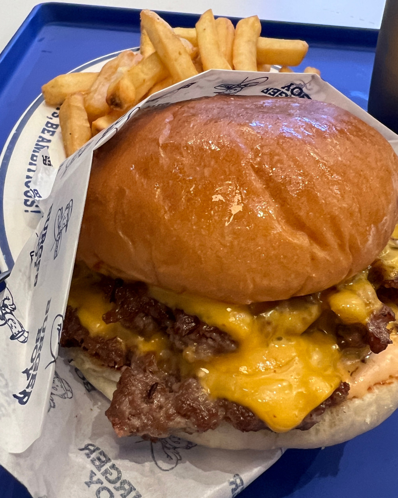
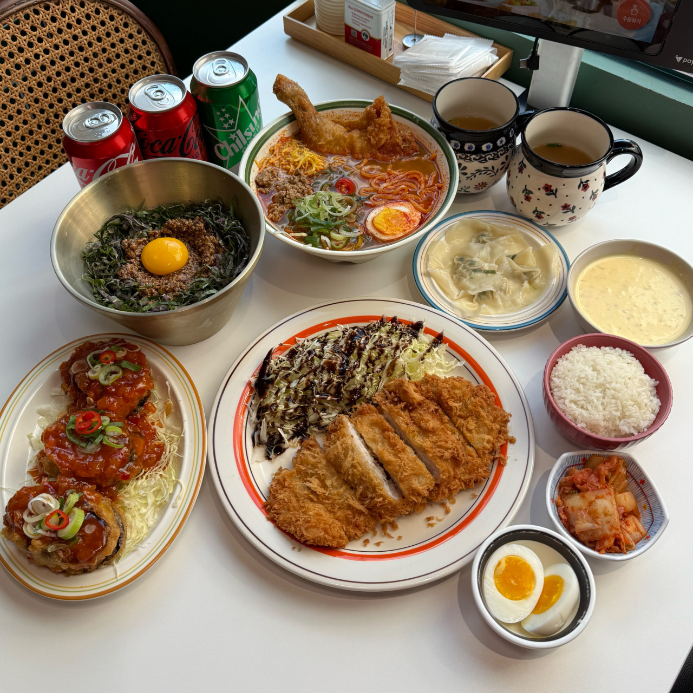
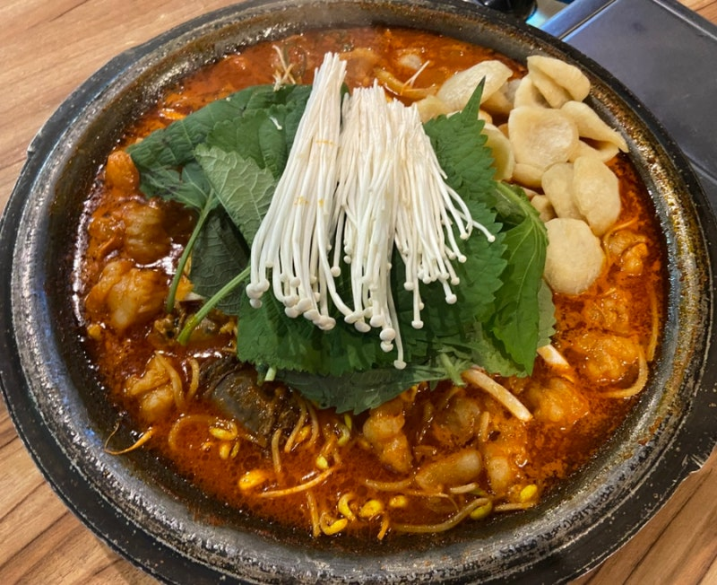
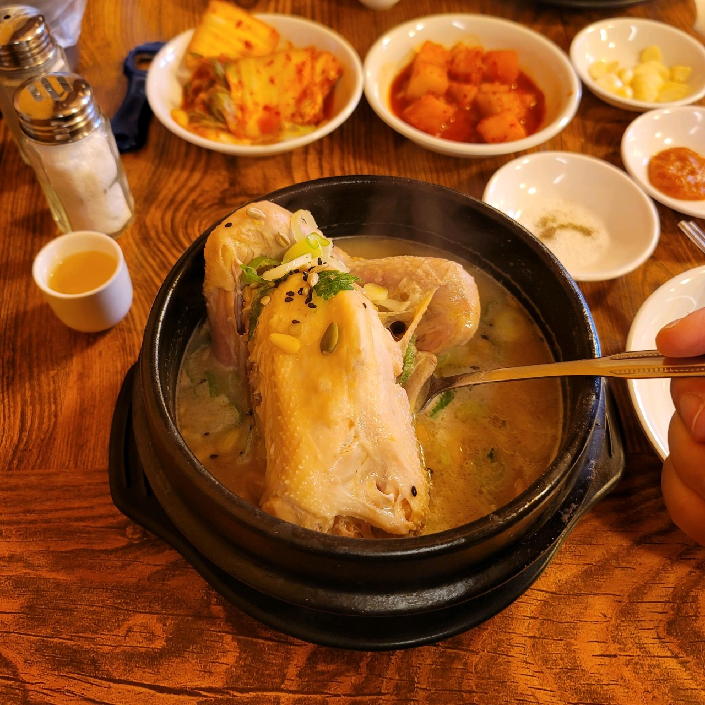
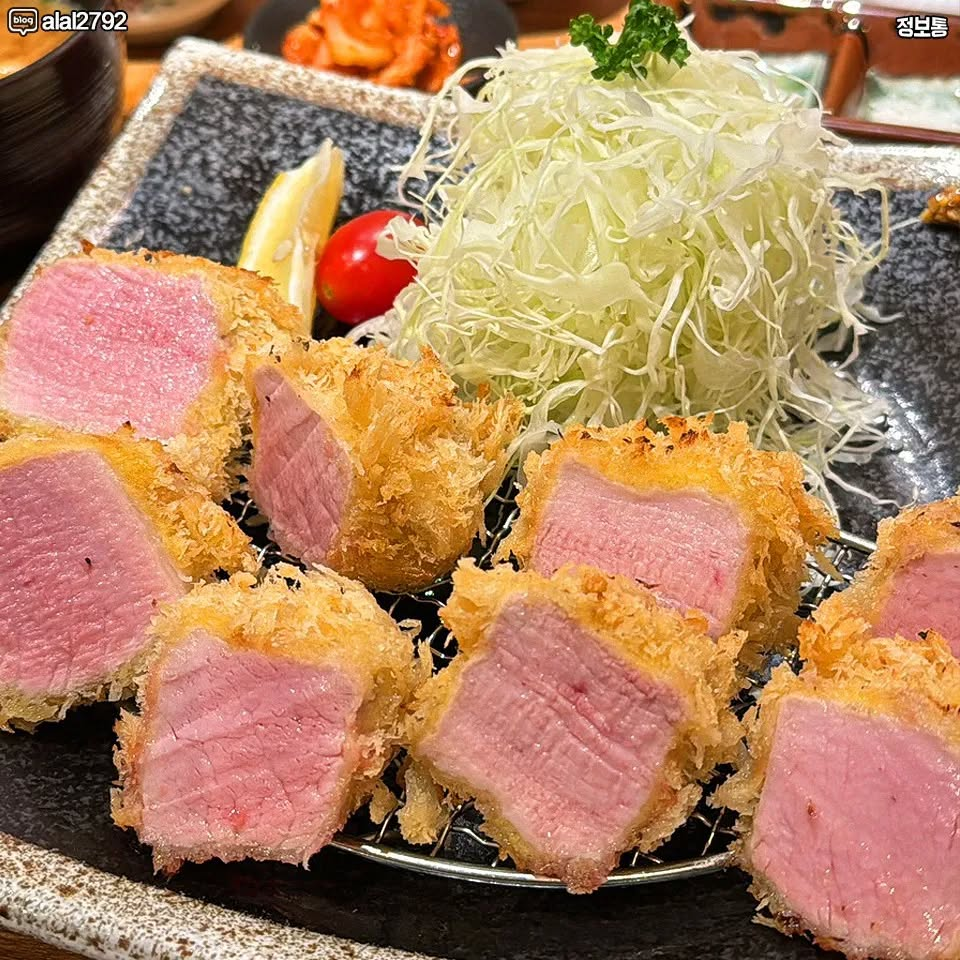
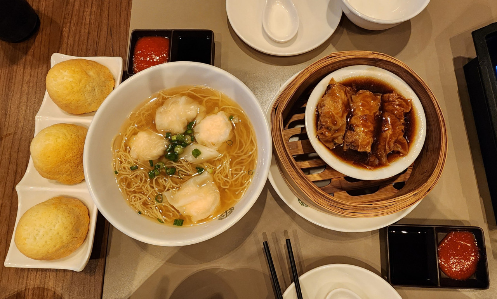

인생 영화 (1) - 인터스텔라
이 영화를 보고 가슴이 뛰지 않을 공대생이 있을까요?
(4번정도 봤네요.)
안녕 날 소개하지 안녕하세요. 띠용입니다.
재미와 행복을 추구하며 살아갑니다.
여러분 모두 즐거운 하루 되세요.
|  도른계 |
 매운향솥 |
 박순례 손말이 고기 |
|  버거보이 |
 성수완당 |
 순곱이네 |
|  토속촌 삼계탕 |
 톤쇼우 |
 팀호완 |
저는 영화를 좋아하지만 울지 않습니다. 대신 제 마음을 울린 인생 영화 TOP 3를 소개합니다.
10년 동안 누가 인생 영화 TOP 3를 물어보면 이렇게 대답했습니다.
TOP3 간 순위는 상시 변동 되므로 누가 1등인지는 안 정했습니다. 제 맘입니다.
이 영화를 보고 가슴이 뛰지 않을 공대생이 있을까요?
(4번정도 봤네요.)
러닝 타임 내내 긴장하며 보게 되는 영화. 마지막 10분 쯤부터는 주변에 아무도 숨을 안 쉰다.
(6번정도 봤네요.)
마음이 평안해지는 지브리 감성을 좋아합니다.
센과 치히로나 하울의 움직이는 성보다 저는 이게 더 재밌더라고요.
이게 진짜 97년작이라고? 하면서 보시면 됩니다.
(한 10번째 까지는 셌었는데)